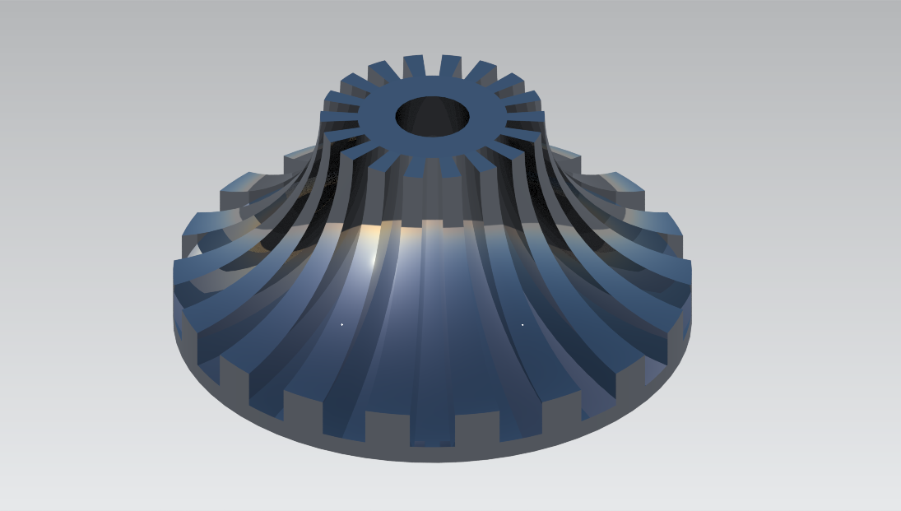
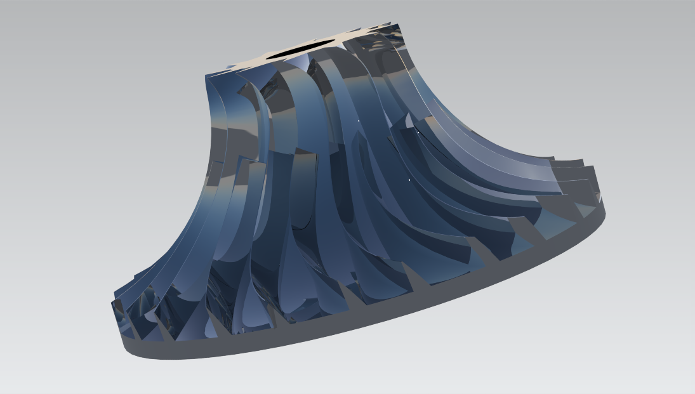
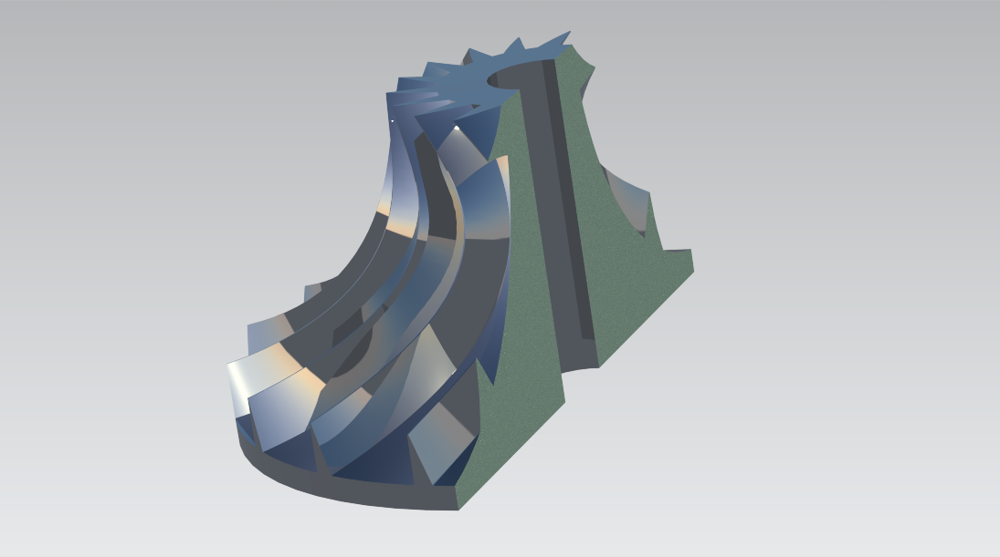

03 / TURBOMACHINERY / CAD
Centrifugal impeller
Three blade configurations exploring the geometry of a centrifugal impeller.
The objective
Explore centrifugal-impeller geometry through straight-cut blades, curved blades, and a curved configuration with splitter blades.
The approach
Solid and surface geometry define the hub and blade passages. The three variants are presented in rendered views, with axial sections revealing the hub profile and internal construction.
The outcome
The model set demonstrates three distinct blade arrangements and corresponding section views. The splitter-blade variant adds intermediate blades between the main passages, making the geometric differences directly visible.
Scope & interpretation
The comparison is geometric. No CFD, pressure-ratio measurements, efficiency estimates, or physical testing are included in the supplied results.



